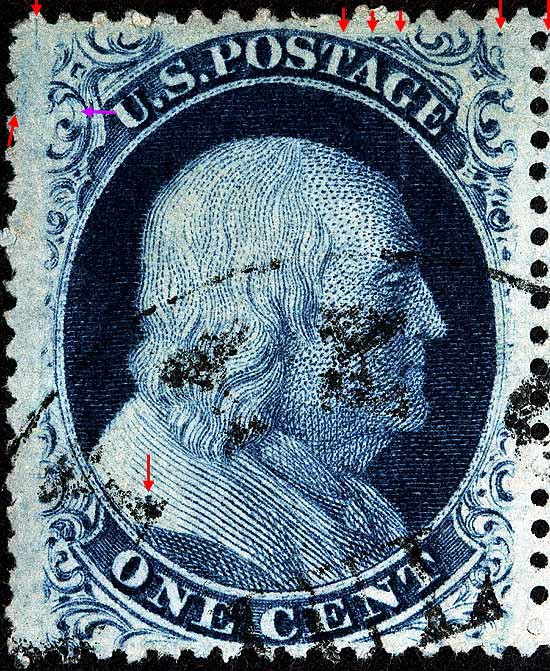
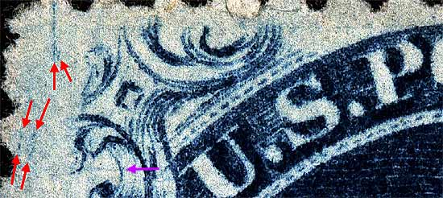
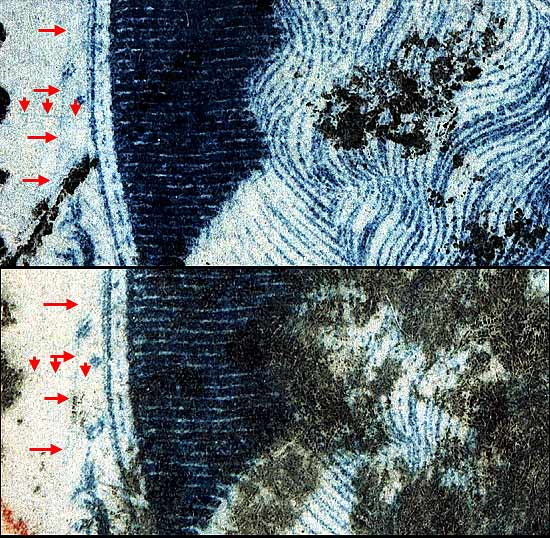
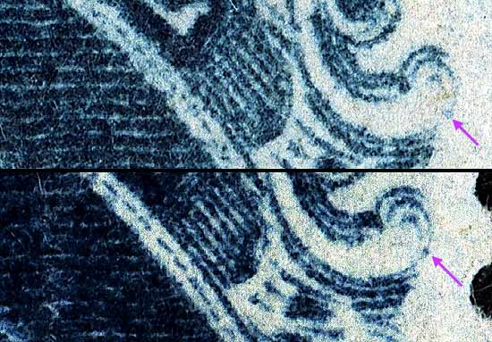
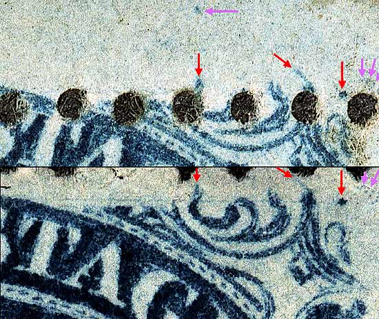

1¢ Franklin Issue of 1857-1861, PLATE 9 Pos 7R9, (Scott #24) |
| Scott #24 Blue, Type V, Relief A Issued only Perforate. Top row stamps from plates 9 and 10 have the guide dot at the upper right. The guide dot is placed differently than on the preceding plates, hence it is very easy to identify Relief "A" stamps coming from these plates. In addition, 17 of the 20 top row positions from Plate 9 have a heavy dot on the shoulder just above the "O" of ONE. The dot on the shoulder is NOT found on positions 8, 9 and 10R9. The Neinken diagrams do not provide enough information to plate the top row with 100% certainty. Positions 2L9 5L9, 6L9, 7L9, 5R9, 6R9, 8R9, and 9R9 are stated to have no plating marks. An attempt to expand the study on this area is attempted here. The violet arrows are marks of note not shown in the plating diagrams and may not be constant. Courtesy of Richard Celler |
|  |
| FIGURE 1. (Below) Single long and short weak vertical scribe line, guide dot and platings mark west or Ornament "A." The Neinken plating diagrams show the vertical scribe lines farther to the left which is incorrect. The plating marks west of Ornament "A" is not clearly represented in the plating drawings.
 |
| FIGURE 2. (Below) A horizontal and vertical scratch of color north of Ornament "E.". This mark is not shown in the plating diagrams but is constant as can be seen on 2 copies.
 |
| FIGURE 3(Below). (Violet arrow) Faint dot in Ornament "M." 7R9 is unusual in that Ornament M is nearly complete. No other top row position on Plate 9 has this feature. These marks are not shown in the plating diagrams.
 |
| FIGURE 4 (Below). Red arrows show top right ornaments and guide dot. The violet arrows indicate faint pinpoints of color which are not indicated in the plating diagrams.
 |
DISCLAIMER and COPYRIGHT INFORMATION: Thanks for visiting this site. I hope you learn something new as we are making new discoveries all the time. You, the visitor, have my permission to link to my pages and to share the INFORMATION with others. The images themselves fall under the fair use guidelines established by the United States Congress and Copyright law. Basically contact us before using. I also ask in return that you send me an e-mail if I have made a mistake, or have made some other technical blunder that in my rush to put these pages up would cause the visitor confusion. Please also visit my other website at www.slingshotvenus.com. and support the live music arts. While your there, be sure to purchase our music. There are not many philatelic rock stars around and we need all the help we can get. :-) I can be reached at: nerdman@ix.netcom.com Update 1/19/08 |